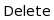

import os
address = os.getcwd()
#address should be ~/GITROOT/GoFigure2/Testing/Sikuli/gofigure2_images
#address = address+"/gofigure2_images"
print address
setBundlePath(address)
start = time.time()
def ClickDelete(Region):
# """Clicks on delete a... in dropdown menu of TraceWidget for Color, CellType, SubCellType. """
find(Region)
a = getLastMatch()
print a, "this is a"
click(a.below(40))
click()
wait(1)
#def ChooseDeleteWidgetTest(Region):
# find(Region)
# a = getLastMatch()
# a.inside().click("WidgetTestDelete.png")
#"SelectedColor.png",
TraceObject = ( ,)
Action = ("Cancel","DeleteFields")
for a in Action:
for i in TraceObject:
ClickDelete(i)
if a == "Cancel":
click(
,)
Action = ("Cancel","DeleteFields")
for a in Action:
for i in TraceObject:
ClickDelete(i)
if a == "Cancel":
click( )
#assert that same state is there.
if a == "DeleteFields":
Region(500,282,283,271).click()
#onChange(getCenter().click("WidgetTestDelete.png"))
click(
)
#assert that same state is there.
if a == "DeleteFields":
Region(500,282,283,271).click()
#onChange(getCenter().click("WidgetTestDelete.png"))
click( )
click()
#assert that previous state is there
#assert selects the last selected one if not deleted,
# if deleted, select the 1rst one of the list.
end = time.time()
elapsedSec = end - start
print elapsedSec, "sec"
)
click()
#assert that previous state is there
#assert selects the last selected one if not deleted,
# if deleted, select the 1rst one of the list.
end = time.time()
elapsedSec = end - start
print elapsedSec, "sec"